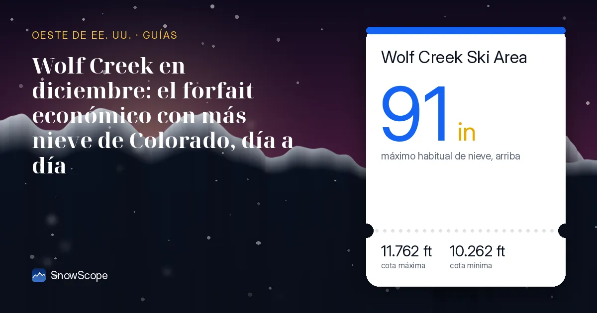
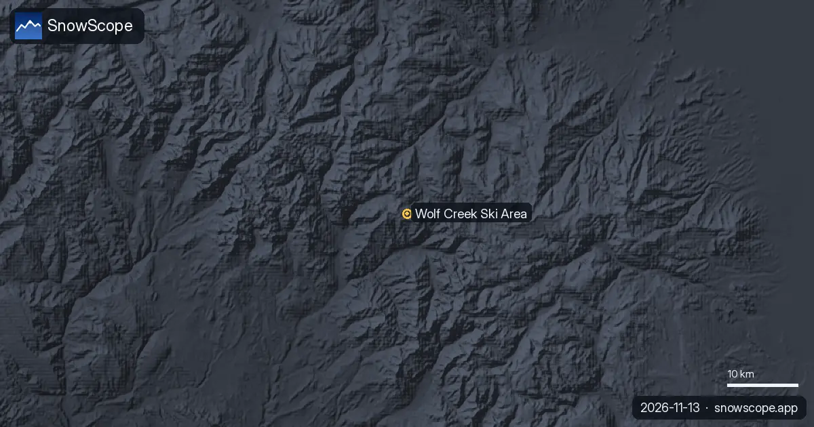

Wolf Creek en diciembre: el forfait económico con más nieve de Colorado, día a día
Wolf Creek Ski Area está situado en lo alto de la Divisoria Continental entre Pagosa Springs y South Fork. Cobra un precio fijo todo el año, publica sus tarifas con antelación y ofrece la nieve más profunda de mediados de diciembre de tres estaciones de Colorado que hemos comprobado. Aquí te mostramos cómo es un diciembre típico en cada altitud y cuándo reservar para evitar precios máximos.
Consulta la previsión de nieve en tiempo real de Wolf Creek Ski Area en la app SnowScopeEspesor de nieve, alertas de nieve polvo y mapa 3D, gratis.
Tres altitudes, tres historias de nieve
Wolf Creek se extiende desde 3 128 m en la base hasta 3 585 m en la cumbre, con 11 remontes y aproximadamente 50 km de pistas. La profundidad de nieve cambia con la altitud. El 15 de diciembre típico, la base tiene 74 cm, media montaña a 3 356 m tiene 87 cm y la cumbre alcanza 92 cm. Para la víspera de Año Nuevo, media montaña sube a 118 cm y la cumbre a 127 cm.
La fiabilidad es alta pero no perfecta. El 15 de diciembre, el 72 % de los inviernos tienen 50 cm o más a media montaña. Las semanas de buena nieve, que SnowScope define como una media semanal de 50 cm o más, aparecen en el 59 % de los inviernos en la primera semana de diciembre pero en el 78 % de los inviernos en la semana de Navidad. Cuando las tormentas evitan las montañas San Juan, toda el área lo nota: un diciembre flojo, uno de cada diez, puede tener solo 12 cm el 15.

Cuándo ir y cuánto cuesta
Los precios de forfait de Wolf Creek 2026-27 son fijos e impresos: 96 $ en días regulares, 110 $ en días máximos. En diciembre, los días máximos van del 20 al 23 de diciembre y del 26 al 31 de diciembre. Eso significa que ahorras 14 $ por forfait si esquías antes del 20 de diciembre, o en Nochebuena o Navidad.
Los forfaits de varios días ofrecen mejor valor para viajes más largos. Un forfait de 2 días cuesta 192 $ en fechas regulares o 220 $ en fechas máximas. Un forfait de 3 días es 285 $ o 327 $. El diciembre más barato es, por lo tanto, cualquier día antes del 20, más los dos días de Navidad.

Cómo se compara: Loveland y Ski Cooper
Loveland, en la I-70 al oeste de Denver, cobra forfaits de principios de temporada a 60 $ en línea hasta el 13 de diciembre, luego 159 $ en taquilla desde el 14 de diciembre en adelante. Su media montaña tenía 74 cm el 15 de diciembre típico, con el 67 % de los inviernos por encima de 50 cm. Ski Cooper cerca de Leadville es la ganga entre semana a 49 $, subiendo a 99 $ los fines de semana y festivos, y tenía 66 cm a media montaña el 15 de diciembre típico, con el 70 % de los inviernos por encima de 50 cm.
Wolf Creek es la más nevada de las tres en nuestros números a media montaña, y la única con un precio fijo toda la temporada. Está más alto y más lejos de Denver: pagas más en tiempo de conducción, pero menos gente y nieve más profunda es el cambio.
Diciembre fue más cálido en inviernos anteriores
Principios de diciembre solía ser más profundo. En los primeros 15 inviernos de nuestro registro, media montaña tenía 140 cm el 15 de diciembre típico. En los últimos 15 inviernos, eso bajó a 60 cm, y la proporción de inviernos por encima de 50 cm cayó del 87 % al 67 %. El invierno pasado fue muy flojo en esa fecha: solo 23 cm.
La tendencia es clara pero no absoluta. Mediados de diciembre y más adelante en el mes se mantienen bien. Para el 25 de diciembre, la profundidad típica es 107 cm a media montaña, y para la víspera de Año Nuevo alcanza 118 cm. La mejor semana en un invierno típico es la última semana del año, con profundidades alrededor de 46 a 50 pulgadas en media montaña y cumbre.
Qué debes saber antes de ir
Wolf Creek Pass (US-160) es alto, empinado e implacable. Conducir en invierno requiere cadenas o tracción en las cuatro ruedas y conciencia del tiempo. Consulta el sitio web del Departamento de Transporte de Colorado antes de salir. El paso se cierra ocasionalmente con nieve fuerte, y las condiciones pueden cambiar rápidamente.
No hay alojamiento en la montaña. Los pueblos más cercanos son Pagosa Springs (40 km al sur) y South Fork (24 km al norte). La mayoría de los visitantes conducen para el día. A más de 3 048 m de altitud, ve con calma el primer día y bebe agua para adaptarte a la altitud. La nieve de principios de temporada puede ser fina; las rocas pueden estar cerca bajo cobertura poco profunda.
Consejos para esquiadores
- Esquía antes del 20 de diciembre para fijar el precio regular de 96 $ en lugar de 110 $.
- Reserva un forfait de 2 o 3 días si puedes; el coste por día baja a 96 $ o 95 $ por día en fechas regulares, igualando o superando los precios de forfait único.
- Planifica media montaña a 3 356 m o superior; la base a 3 128 m puede ser fina al principio de la temporada.
- Lleva cadenas o usa tracción en las cuatro ruedas; comprueba las condiciones de CDOT y el estado de las carreteras antes de conducir Wolf Creek Pass.
- Ve con calma el primer día a esta altitud; bebe agua y evita el sobreesfuerzo para adaptarte a más de 3 048 m.
Sobre estas cifras
Los espesores de nieve de las estaciones son la nieve más profunda en las pistas altas en la fecha indicada; son estimaciones para una zona, no una medida en un punto. Las previsiones pueden cambiar. Consulta siempre el boletín oficial de aludes antes de salir fuera de pista.
Boletines oficiales de aludes: Colorado Avalanche Information Center
Citar este informe
Para investigación, docencia o prensa: cifras y gráficos reutilizables libremente bajo CC BY 4.0 con esta cita.
SnowScope (2026), Wolf Creek en diciembre: el forfait económico con más nieve de Colorado, día a día, https://snowscope.app/blog/es/2026/11/wolf-creek-colorado-december-skiing-value.html, consultado el 2026-11-14
SnowScope (Atlas Labs). (2026, November 14). Wolf Creek en diciembre: el forfait económico con más nieve de Colorado, día a día. SnowScope snow reports. https://snowscope.app/blog/es/2026/11/wolf-creek-colorado-december-skiing-value.html
BibTeX
@misc{snowscope2026wolfcreekcoloradodecembe,
author = {{SnowScope (Atlas Labs)}},
title = {Wolf Creek en diciembre: el forfait económico con más nieve de Colorado, día a día},
year = {2026},
month = nov,
howpublished = {\url{https://snowscope.app/blog/es/2026/11/wolf-creek-colorado-december-skiing-value.html}},
note = {Published 2026-11-14 16:17 UTC; accessed 2026-11-14}
}· CC BY 4.0 · Métodos, datos y herramientas →
Sigue Wolf Creek Ski Area
Gratis: un aviso cuando llega la nieve y la previsión cada mañana.